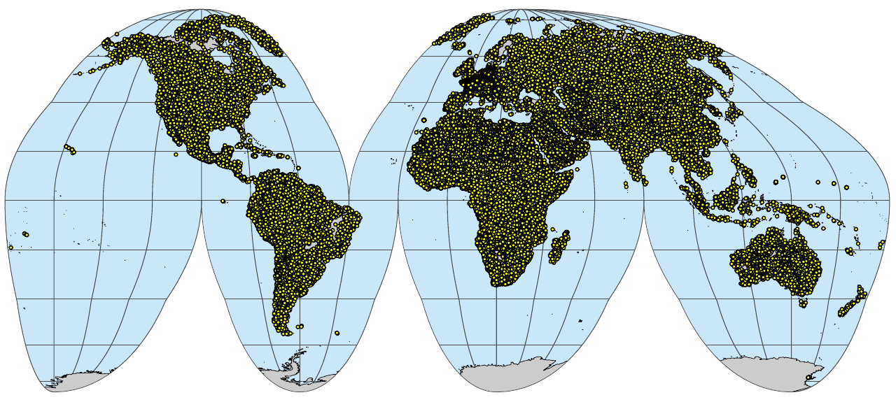
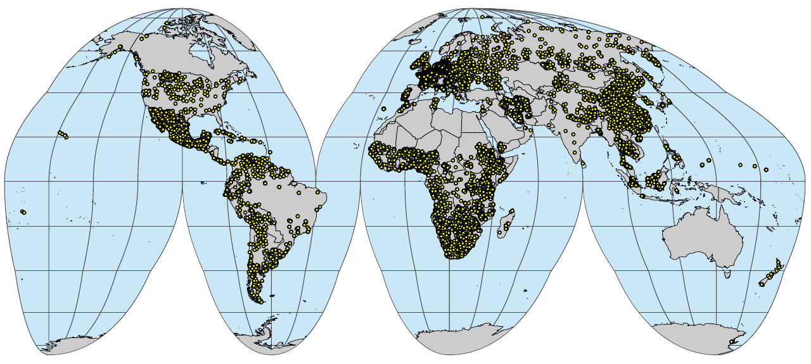

wosis = sf::read_sf("/mnt/landmark/HWSDv2/wosis_latest_profiles.gpkg")
summary(as.factor(wosis$cwrb_version))WRB soil types
Overview
This section describes import steps used to produce a global compilation of FAO’s IUSS’s World Reference Base (WRB) observations of soil types. Classes are either used as-is or a translated from some local or international system. Correlation tables are available in the folder ./correlation and is based on various literature sources. Correlation is not trivial and often not 1:1 so we typically use 2–3 options for translating soil types (Krasilnikov et al. 2009). Output compilations are available in the folder ./out. Please refer to the dataset version / DOI to ensure full reproducibility of your modeling.
This dataset is currently used to produce soil type maps of the world at various spatial resolutions. To add new dataset please open a new issue or do a merge request.
WoSIS point datasets
There are currently several global datasets that reference distribution of WRB classes. For building training points for predictive soil type mapping the most comprehensive dataset seems to be World Soil Information Service (WoSIS) soil profile database (available via: https://www.isric.org/explore/wosis) (Batjes, Ribeiro, and Van Oostrum 2020).
You can download the most up-to-date snapshot of the most up-to-date WOSIS Geopackage file directly by using the ISRIC’s Web Feature Service. Below is an example of a snapshot downloaded on 10-April-2023:
The WRB soil types can be generate by combining multiple columns:
wosis$wrb4 = paste0(ifelse(is.na(wosis$cwrb_prefix_qualifier), "", paste0(wosis$cwrb_prefix_qualifier, " ")), wosis$cwrb_reference_soil_group, ifelse(is.na(wosis$cwrb_suffix_qualifier), "", paste0(" ", wosis$cwrb_suffix_qualifier)))
summary(as.factor(wosis$wrb4), maxsum=20)This finally gives about 30,000 soil points with soil classification:
wosis.wrb = wosis[!wosis$wrb4=="NA", c("profile_id", "geom_accuracy", "latitude", "longitude", "wrb4", "dataset_id")]
str(wosis.wrb)
#plot(wosis.wrb[,c("longitude","latitude")])We can write the summary distribution of soil types by using:
xs0 = summary(as.factor(wosis.wrb$wrb4), maxsum = length(levels(as.factor(wosis.wrb$wrb4))))
write.csv(data.frame(WRB=attr(xs0, "names"), count=xs0), "./correlation/wosis.wrb_summary.csv")After some clean-up, we can prepare a harmonized legend that now has consistently WRB soil types up to the level of great-group + prefix and with soil points that have a location accuracy of not worse than 1 km:
h.wosis = read.csv("./correlation/WOSIS_WRB_legend.csv")
h.wosis$wrb4 = h.wosis$WRB
wosis.wrb$h_wrb4 = plyr::join(as.data.frame(wosis.wrb["wrb4"]), h.wosis)$h_wrb4
## copy values
wosis.wrb2 = wosis.wrb
wosis.wrb2$h_wrb4 = plyr::join(as.data.frame(wosis.wrb2["wrb4"]), h.wosis)$h_wrb4.2
#summary(as.factor(wosis.wrb$h_wrb4))
#str(levels(as.factor(wosis.wrb$h_wrb4)))
## remove points with poor location accuracy
h.wosis.wrb = rbind(
as.data.frame(wosis.wrb[!(is.na(wosis.wrb$h_wrb4)|wosis.wrb$h_wrb4==""|wosis.wrb$geom_accuracy>0.08334),]),
as.data.frame(wosis.wrb2[!(is.na(wosis.wrb2$h_wrb4)|wosis.wrb2$h_wrb4==""|wosis.wrb2$geom_accuracy>0.08334),]))
h.wosis.wrb$source_db = h.wosis.wrb$dataset_id
dim(h.wosis.wrb)
saveRDS.gz(h.wosis.wrb, "./correlation/h.wosis.wrb.rds")which can be now considered an analysis-ready point dataset with h_wrb4 being the harmonized value of the soil type:
h.wosis.wrb = readRDS("./correlation/h.wosis.wrb.rds")
head(h.wosis.wrb) profile_id geom_accuracy latitude longitude wrb4
1 47431 0.000100 6.5875 2.1525 Planosol
2 47478 0.010000 6.5875 2.1900 Planosol
3 47503 0.000100 6.5875 2.2262 Planosol
4 47596 0.000100 6.8733 2.3458 Acrisol
5 52678 0.000278 1.0700 34.9000 Vertisol
6 52686 0.000278 0.9400 34.9500 Ferralsol
dataset_id geom h_wrb4
1 {AF-AfSP,BJSOTER,WD-WISE} POINT (2.1525 6.5875) Eutric Planosols
2 {AF-AfSP,BJSOTER,WD-WISE} POINT (2.19 6.5875) Eutric Planosols
3 {AF-AfSP,BJSOTER,WD-WISE} POINT (2.2262 6.5875) Eutric Planosols
4 {AF-AfSP,BJSOTER,WD-WISE} POINT (2.3458 6.8733) Haplic Acrisols
5 {AF-AfSP,KE-SOTER,WD-WISE} POINT (34.9 1.07) Haplic Vertisols
6 {AF-AfSP,KE-SOTER,WD-WISE} POINT (34.95 0.94) Geric Ferralsols
source_db
1 {AF-AfSP,BJSOTER,WD-WISE}
2 {AF-AfSP,BJSOTER,WD-WISE}
3 {AF-AfSP,BJSOTER,WD-WISE}
4 {AF-AfSP,BJSOTER,WD-WISE}
5 {AF-AfSP,KE-SOTER,WD-WISE}
6 {AF-AfSP,KE-SOTER,WD-WISE}HWSDv2
A disadvantage of using only legacy soil profiles, however, is that these are often spatially clustered i.e. large gaps exists where almost no data available. This applies especially for African and Asian continents. To increase spatial coverage of the training points for global soil type mapping, we can add points generated from the global soil polygon map e.g. Harmonized World Soil Database (HWSD) (FAO & IIASA 2023). This can be done in three steps: first, we prepare summary of all WRB soil types in the HWSDv2:
hwsd <- mdb.get("/mnt/landmark/HWSDv2/HWSD2.mdb")
#str(hwsd)
wrb.leg = hwsd$D_WRB4
#str(wrb.leg)
wrb.leg$WRB4 = wrb.leg$CODE
layer = hwsd$HWSD2_LAYERS[,c("HWSD2.SMU.ID", "WRB4")]
layer$VALUE = plyr::join(layer, wrb.leg[c("VALUE","WRB4")], match="first")$VALUE
xs = summary(as.factor(layer$VALUE), maxsum = nrow(wrb.leg))
write.csv(data.frame(WRB4=attr(xs, "names"), count=xs), "./correlation/hwsd2_summary.csv")The ./correlation/hwsd2_summary.csv table now shows which are the most frequent soil types for the world based on the HWSDv2. Note, these are primarily expert-based and of unknown uncertainty / confidence, so should be used with caution, unlike WoSIS and other legacy soil profiles which are based on actual soil observations and fieldwork.
Second, we can prepare a raster layer that we can use to randomly draw training points using some probability sampling e.g. Simple Random Sampling. Because we want to draw samples from an equal area space, a good idea is to convert the original HWSD raster to the IGH projection:
rgdal::GDALinfo("/mnt/landmark/HWSDv2/HWSD2.bil")
## 1km resolution
te = c(-20037508,-6728980, 20037508, 8421750)
gh.prj = "+proj=igh +ellps=WGS84 +units=m +no_defs"
system(paste0('gdalwarp /mnt/landmark/HWSDv2/HWSD2.bil /mnt/landmark/HWSDv2/HWSD2_gh_1km.tif -r \"near\"
--config CHECK_WITH_INVERT_PROJ TRUE -t_srs \"', gh.prj,
'\" -co \"COMPRESS=DEFLATE\" -tr 1000 1000 -overwrite -te ',
paste(te, collapse = " ")))Now we can sample random points from the projected raster by using the terra package functionality (Hijmans 2019). We generate 100,000 random points, although in principle we can later on subset the points to much less points as needed.
rnd.hwsd = terra::spatSample(terra::rast("/mnt/landmark/HWSDv2/HWSD2_gh_1km.tif"),
size=1e5, method="random", na.rm=TRUE, xy=TRUE)
## merge and make WRB4 layer
names(rnd.hwsd)[3] = "HWSD2.SMU.ID"
rnd.hwsd$WRB4 = plyr::join(rnd.hwsd, layer[c("HWSD2.SMU.ID","VALUE")], match="first")$VALUE
rnd.sf = sf::st_as_sf(rnd.hwsd, coords = c(1,2), crs=gh.prj)
rnd.ll <- rnd.sf %>% sf::st_transform(4326)
unlink("./correlation/sim_hwsdv2_pnts.gpkg")
sf::write_sf(rnd.ll, "./correlation/sim_hwsdv2_pnts.gpkg", driver = "GPKG")
saveRDS(rnd.ll, "./correlation/sim_hwsdv2_pnts.rds")We can further harmonize values using a correlation legend:
rnd.ll = readRDS("./correlation/sim_hwsdv2_pnts.rds")
h.hwsd = read.csv("./correlation/HWSDv2_WRB_legend.csv")
hwsd.wrb = as.data.frame(cbind(rnd.ll, sf::st_coordinates(rnd.ll)))
hwsd.wrb = plyr::rename(hwsd.wrb, c("X"="longitude", "Y"="latitude"))
hwsd.wrb$h_wrb4 = plyr::join(hwsd.wrb, h.hwsd)$h_wrb4Joining by: WRB4hwsd.wrb$source_db = "HWSDv2"
hwsd.wrb$profile_id = paste0("SIM", 1:nrow(hwsd.wrb))
## subset to complete points
hwsd.wrb = hwsd.wrb[!is.na(hwsd.wrb$WRB4),]which now also has a harmonized column h_wrb4 compatible to the column produced using the WoSIS points:
head(hwsd.wrb) HWSD2.SMU.ID WRB4 longitude latitude
1 1467 Ferric Lixisols 8.290244 13.93512
2 11321 Anthrosols 82.118452 41.73180
3 26612 Calcaric Cambisols 33.212770 15.03106
4 16664 Eutric Cambisols 38.366071 10.60237
5 3387 Cambic Cryosols -64.448944 55.92456
6 11805 Haplic Acrisols 118.358546 25.82881
geometry h_wrb4 source_db profile_id
1 POINT (8.290244 13.93512) Ferric Lixisols HWSDv2 SIM1
2 POINT (82.11845 41.7318) <NA> HWSDv2 SIM2
3 POINT (33.21277 15.03106) Calcaric Cambisols HWSDv2 SIM3
4 POINT (38.36607 10.60237) Eutric Cambisols HWSDv2 SIM4
5 POINT (-64.44894 55.92456) Cambic Cryosols HWSDv2 SIM5
6 POINT (118.3585 25.82881) Haplic Acrisols HWSDv2 SIM6So in summary we have prepared two point datasets from WoSIS and HSWDv2. WoSIS are the actual observations of soil types and should be considered ground-truth. The HWSDv2 contains the WRB 2022 version soil types per mapping unit, but these are potentially of variable accuracy and should be only used to fill gaps in training data. We had to manually adjust harmonize some classes that we either outdated (old WRB versions) or are missing prefix / suffix.
There are many more point datasets with WRB classification or compatible classification that could be added to the list of training points. Below we list most recent datasets with soil types that we import and add to WoSIS to produce the most up-to-date compilation of soil training data.
Additional point datasets with WRB classes
In addition to WoSIS and HWSDv2, we can also add some additional point datasets that are not yet included in any global compilation but potentially contain ground-truth observations of soil types. For example, we can use point observations coming from the land-surface observations e.g. to represent shifting sand and bare-rock areas. For example, global land cover validation data sets that are produced by photo-interpretation of very high resolution satellite imagery (e.g. 20 cm spatial resolution) often contain useful observations of the shifting sand, permanent ice and bare-rocks (Tsendbazar et al. 2021). These specific surface materials are often missing or are systematically under-represented in the legacy soil profile datasets. Here is an example of almost 6000 observations of bare rock and shifting sands:
lc.xy = readRDS("./correlation/photointerpretation_leptosol.rds")
summary(as.factor(lc.xy$h_wrb4))Lithic Leptosols Shifting sands
3928 2156 Note that we define the Shifting sands as an additional category of soil type as these are arbitrarily either masked out or (controversially) classified to different soil types. We consider that it is more consistent to map shifting sands as a separate category of land.
Another dataset interesting for soil type mapping are the legacy soil observations focused on tropical peatlands, published in the literature, then digitized manually (Hengl 2016; Gumbricht et al. 2017):
peat.xy = read.csv("/mnt/diskstation/data/Soil_points/INT/CIFOR_peatlands/SOC_literature_CIFOR_v1.csv", na.strings = c("", "NA"))
peat.xy = plyr::rename(peat.xy, c("TAXNWRB"="h_wrb4", "modelling.x"="longitude", "modelling.y"="latitude", "SOURCEID"="profile_id"))
peat.xy$source_db = "CIFOR_peatlands"
peat.xy = peat.xy[!is.na(peat.xy$longitude) & !is.na(peat.xy$h_wrb4), c("profile_id", "source_db","longitude", "latitude", "h_wrb4")]Peatlands and inaccessible tropical soil types are often under-represented and hence this dataset helps reduce the bias in under-representing tropical soils.
Croatian soil profile database also contains soil types still in FAO classification system (Antonić, Pernar, and Jelaska 2003):
hr.xy = readRDS("./correlation/hrspdb_pnts.rds")
hr.xy2 = hr.xy[,-which(names(hr.xy) == "h_wrb4")]
hr.xy2 = plyr::rename(hr.xy2, c("h_wrb4.2"="h_wrb4"))Legacy soil observations for Italy (Righini, Costantini, and Sulli 2001; Vecchio, Barberis, and Bourlot 2002):
it.xy = readRDS("/mnt/landmark/HWSDv2/taxa/WRB_points_Italy.rds")
it.xy = plyr::rename(it.xy, c("wrb2015"="h_wrb4", "id_site"="profile_id", "lat"="latitude", "long"="longitude"))
it.xy$source_db = "Italian_SPDB"German agricultural soil inventory dataset (Poeplau et al. 2020):
de.xy = readRDS("/mnt/landmark/HWSDv2/taxa/WRB_points_Germany.rds")
de.xy = plyr::rename(de.xy, c("WRB_correlation_1"="h_wrb4", "PointID"="profile_id", "lat"="latitude", "lon"="longitude"))
de.xy$Specific.soil.subtype = NULL
de.xy$source_db = "BZE_LW"
de.xy2 = de.xy[,-which(names(de.xy) == "h_wrb4")]
de.xy2 = plyr::rename(de.xy2, c("WRB_correlation_2"="h_wrb4"))French RMQS soil profile and monitoring dataset (Saby et al. 2020):
fr.xy = readRDS("/mnt/landmark/HWSDv2/taxa/WRB_points_France.rds")
fr.xy = plyr::rename(fr.xy, c("WRB_correlation_1"="h_wrb4", "id_site"="profile_id", "lat"="latitude", "lon"="longitude"))
fr.xy$signific_ger_95 = NULL
fr.xy$source_db = "RMQS1"
fr.xy2 = fr.xy[,-which(names(fr.xy) == "h_wrb4")]
fr.xy2 = plyr::rename(fr.xy2, c("WRB_correlation_2"="h_wrb4"))Final compilation of analysis-ready points
Multiple imported point datasets can be finally combined into a single global consistent analysis-ready training dataset (here we limit to max 20,000 simulated points):
sel.cn = c("profile_id","latitude", "longitude", "h_wrb4", "source_db")
tr.pnts = plyr::rbind.fill(list(h.wosis.wrb[, sel.cn],
hwsd.wrb[sample.int(2e4, n = nrow(hwsd.wrb)), sel.cn],
lc.xy, hr.xy2[, sel.cn],
peat.xy[, sel.cn],
hr.xy[, sel.cn],
it.xy[, sel.cn], de.xy[, sel.cn], de.xy2[, sel.cn],
fr.xy[, sel.cn], fr.xy2[, sel.cn]))We can clean-up some systematic naming issues common in many soil DBs:
tr.pnts$h_wrb4 = gsub(",", " ", tr.pnts$h_wrb4)
tr.pnts$h_wrb4 = gsub("distric", "dystric", tr.pnts$h_wrb4, ignore.case = TRUE)
tr.pnts$h_wrb4 = gsub("sol ", "sols ", tr.pnts$h_wrb4, ignore.case = TRUE)
tr.pnts$h_wrb4 = gsub("sol$", "sols", tr.pnts$h_wrb4, ignore.case = TRUE)
tr.pnts$h_wrb4 = ifelse(tr.pnts$h_wrb4=="", NA, tr.pnts$h_wrb4)
## subset to complete points:
tr.pnts = tr.pnts[!is.na(tr.pnts$h_wrb4)&!is.na(tr.pnts$longitude),]This gives a total of about 70,000 training points with WRB soil type. Note that correlation between different national systems is not trivial and hence you should always check the folder ./correlation to see if some soil types are possibly incorrectly correlated. Also, IUSS and FAO are kind to maintain the World Reference Base (WRB), but a table correlating various versions of WRB is often not trivial and we have to somewhat improvise (or ignore the issue) that some soil types have changed over time.
wrb.pnts_profiles_sf <- sf::st_as_sf(tr.pnts, coords = c("longitude","latitude"), crs="EPSG:4326")
if(!file.exists("./img/sol_wrb.pnts_profiles.png")){
plot_gh(wrb.pnts_profiles_sf, out.pdf="./img/sol_wrb.pnts_profiles.pdf")
system("pdftoppm ./img/sol_wrb.pnts_profiles.pdf ./img/sol_wrb.pnts_profiles -png -f 1 -singlefile")
system("convert -crop 1280x575+36+114 ./img/sol_wrb.pnts_profiles.png ./img/sol_wrb.pnts_profiles.png")
}
wrb.pnts_profilesL_sf <- sf::st_as_sf(tr.pnts[!(tr.pnts$source_db %in% c("HWSDv2", "GlobalLCV")),], coords = c("longitude","latitude"), crs="EPSG:4326")
if(!file.exists("./img/sol_wrb.pnts_tot.profiles.png")){
plot_gh(wrb.pnts_profilesL_sf, out.pdf="./img/sol_wrb.pnts_tot.profiles.pdf")
system("pdftoppm ./img/sol_wrb.pnts_tot.profiles.pdf ./img/sol_wrb.pnts_tot.profiles -png -f 1 -singlefile")
system("convert -crop 1280x575+36+114 ./img/sol_wrb.pnts_tot.profiles.png ./img/sol_wrb.pnts_tot.profiles.png")
}
We can export the final training points to Geopackage file by using e.g.:
sf::write_sf(sf::st_as_sf(tr.pnts[!tr.pnts$source_db=="Italian_SPDB",],
coords = c("longitude","latitude"), crs="EPSG:4326"),
paste0("./out/gpkg/sol_wrb.pnts_profiles.gpkg"), driver = "GPKG")
saveRDS(tr.pnts[!tr.pnts$source_db=="Italian_SPDB",], "./out/rds/sol_wrb.pnts_profiles.rds")
#save.image.pigz(file="soilwrb.RData")References
Antonić, Oleg, Nikola Pernar, and Sven D Jelaska. 2003. “Spatial Distribution of Main Forest Soil Groups in Croatia as a Function of Basic Pedogenetic Factors.” Ecological Modelling 170 (2-3): 363–71. https://doi.org/10.1016/S0304-3800(03)00239-4.
Batjes, Niels H, Eloi Ribeiro, and Ad Van Oostrum. 2020. “Standardised Soil Profile Data to Support Global Mapping and Modelling (WoSIS Snapshot 2019).” Earth System Science Data 12 (1): 299–320. https://doi.org/10.5194/essd-12-299-2020.
FAO & IIASA. 2023. Harmonized World Soil Database version 2.0. Rome; Laxenburg: FAO. https://doi.org/10.4060/cc3823en.
Gumbricht, Thomas, Rosa Maria Roman-Cuesta, Louis Verchot, Martin Herold, Florian Wittmann, Ethan Householder, Nadine Herold, and Daniel Murdiyarso. 2017. “An Expert System Model for Mapping Tropical Wetlands and Peatlands Reveals South America as the Largest Contributor.” Global Change Biology 23 (9): 3581–99. https://doi.org/10.1111/gcb.13689.
Hengl, Tomislav. 2016. “Global Assessment of Soil Organic Carbon Stocks and Spatial Distribution of Histosols: The Machine Learning Approach.” In EGU General Assembly Conference Abstracts, EPSC2016–9447.
Hijmans, Robert J. 2019. Spatial data in R. Davis, CA: United States: GFC for the Innovation Lab for Collaborative Research on Sustainable Intensification. https://rspatial.org/.
Krasilnikov, P., R. Arnold, J. J. I. Marti, and S. Shoba. 2009. A Handbook of Soil Terminology, Correlation and Classification. Taylor & Francis Group.
Poeplau, Christopher, Anna Jacobs, Axel Don, Cora Vos, Florian Schneider, Mareille Wittnebel, Bärbel Tiemeyer, Arne Heidkamp, Roland Prietz, and Heinz Flessa. 2020. “Stocks of Organic Carbon in German Agricultural Soils—Key Results of the First Comprehensive Inventory.” Journal of Plant Nutrition and Soil Science 183 (6): 665–81. https://doi.org/10.1002/jpln.202000113.
Righini, Gaia, Edoardo AC Costantini, and Lorenzo Sulli. 2001. “La Banca Dati Delle Regioni Pedologiche Italiane.” Boll. Soc. It. Scienza Del Suolo 50 (Suppl.): 261–71.
Saby, Nicolas P. A., Jean-Philippe Chenu, Tamas Szergi, Adam Csorba, Patrick Bertuzzi, Benoît Toutain, Calypso Picaud, Laura Gay, and R. Creamer. 2020. “French RMQS soil profile and monitoring dataset with related management practices data.” Recherche Data Gouv. https://doi.org/10.15454/AIQ9WS.
Tsendbazar, N, Martin Herold, L Li, A Tarko, S De Bruin, D Masiliunas, M Lesiv, et al. 2021. “Towards Operational Validation of Annual Global Land Cover Maps.” Remote Sensing of Environment 266: 112686. https://doi.org/10.1016/j.rse.2021.112686.
Vecchio, A del, E Barberis, and G Bourlot. 2002. “[The Regional Data Base of Agricultural Soils. An Essential Tool for the Knowledge of Territory and Planning in Agriculture [Piedmont]].” Agricoltura Ricerca (Italy) 24: 3–14.